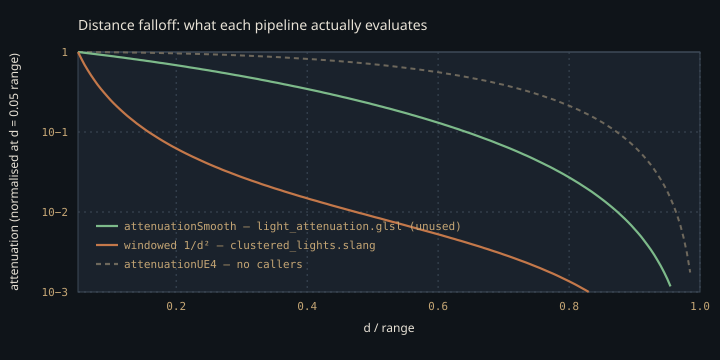

Monograph · Tree · ← Sitemap · Lighting includes
shaders
Lighting includes
IBL, attenuation, light types, phase, blinn_phong.
What the include graph actually says
`shaders/includes/lighting/` holds two headers, `light_attenuation.glsl` and `blinn_phong.glsl`. Grep the include directive across `shaders/` and neither is named by any stage; the only `#include` either file takes part in is `light_attenuation.glsl` pulling `math.glsl` for itself.
#include "includes/common/math.glsl"shaders/includes/lighting/light_attenuation.glsl:12That would be a boring page if an unused file implied unused math. It does not: `deferred_lighting.frag`, the shader that actually runs, re-derives the spot-cone ramp, the light-direction and ambient terms, and the whole split-sum IBL block inline — the same algebra, none of it included from here. The one thing it does *not* re-derive is the distance law this header calls its default.
Treat this directory as a proposal, not an implementation. No shader includes any of it, and the CMake source glob compiles only stages, so neither header is even parsed by a shader build. Everything that ships is in `deferred_lighting.frag`, which copied some of this math and rejected the rest. The interesting failures are where the copy and the original disagree.
The falloff the header calls its default
`attenuationSmooth` is commented in the header as "current OHAO default". It has no callers, and neither does anything else in the file:
$d$ is the surface-to-light distance and $r$ is the light's range, which travels in the `w` channel of the packed direction vector. The first factor is an inverse-square-*shaped* core that stays finite at $d=0$, where it equals exactly 1. The second is a squared edge ramp, so both the value and its first derivative vanish at $d = r$: a light leaving its range fades out instead of popping.
float attenuation = 1.0 / (1.0 + (distance * distance) / (range * range));shaders/includes/lighting/light_attenuation.glsl:52The header pairs it with a plain linear cone ramp between the inner and outer cosines, `attenuationSpotCone`, and a smoothstepped `attenuationSpotConeSmooth` variant.
float attenuationSpotCone(float cosAngle, float innerCone, float outerCone) {shaders/includes/lighting/light_attenuation.glsl:88The price of that bounded shape is that $r$ scales brightness everywhere, not just near the cutoff. Both factors rise monotonically with $r$ at fixed $d$, so widening a light's range *brightens* it at every distance: at $d = 5$, taking $r$ from 10 to 20 moves the factor from $0.8 \times 0.25 = 0.200$ to $0.941 \times 0.5625 = 0.529$. Range is not a cutoff knob here; it is a second intensity knob.
The falloff the deferred pipeline evaluates
`deferred_lighting.frag` does not include the header. It declares its own `calculateAttenuation`, and picks a different law — Karis-style windowed inverse-square:
Same symbols. This one is correct in the far field and clamps the $1/d^{2}$ singularity at 100 rather than removing it, with a quartic window that reaches zero at $d = r$ while staying near 1 over most of the light's useful volume.
float windowing = clamp(1.0 - pow(distance / range, 4.0), 0.0, 1.0);shaders/core/deferred_lighting.frag:99The header already contains the near-match — `attenuationUE4` — with zero callers. It also differs from the deferred version in a way that changes units: it normalises distance by range *before* squaring, so its core is dimensionless and bounded by 1.
float d = distance / range;shaders/includes/lighting/light_attenuation.glsl:38
One `LightData`, two incompatible falloff laws. The header's default is dimensionless and peaks at 1; the deferred law carries 1/length² units and peaks at 100. They are not related by any constant — the ratio between them varies with both distance and range — so an intensity tuned against one is simply wrong under the other. That is the reason not to "tidy" `deferred_lighting.frag` onto this header: including it is free, but switching the law re-authors every light intensity in every scene. If a shared include is wanted, the function to share is the deferred one, and the header's `attenuationUE4` is the closest starting point.
The IBL the deferred pass evaluates instead
The header directory has no image-based lighting at all. What ships is split-sum IBL written inline in `deferred_lighting.frag`, fed from the 2D equirect environment map with a mip level as roughness proxy instead of a prefiltered cubemap:
float lod = roughness * 9.0; // assuming 10 mip levels for 1024x512shaders/core/deferred_lighting.frag:317The BRDF LUT it samples is, in practice, the pass's 1×1 fallback image. `DeferredLightingPass::setIBLTextures` exists and `DeferredRenderer` forwards to it, but nothing calls the outer setter, so `m_brdfLUTView` stays null and binding 9 resolves to the dummy view:
imageInfos[8].imageView = m_brdfLUTView != VK_NULL_HANDLE ? m_brdfLUTView : fallbackView;ohao/render/deferred/deferred_lighting_pass.cpp:354That dummy is a 1×1 RGBA8 image created with `VK_IMAGE_USAGE_SAMPLED_BIT` and nothing else — it has no transfer usage, so no upload is even permitted — and it receives one layout transition and no writes. Its texel is Vulkan-undefined, not guaranteed zero.
imageInfo.usage = VK_IMAGE_USAGE_SAMPLED_BIT;ohao/render/deferred/deferred_lighting_pass.cpp:763So the shader's "no real LUT bound" branch is not defensive paranoia about a hypothetical: it is the only thing standing between the deferred metals and whatever that allocation happens to contain. It fires when the sampled pair sums below `1e-4` and substitutes an analytic `vec2(max(1-roughness, 0.04), roughness*0.25)`. Whether the engine's environment-specular response today is that analytic curve or an undefined texel is not something the code decides.
brdf = vec2(max(1.0 - roughness, 0.04), roughness * 0.25);shaders/core/deferred_lighting.frag:332blinn_phong.glsl and the scar it documents
This header is a legacy Blinn-Phong shading entry point that no stage includes. Its `calculateAttenuation` is a line-for-line copy of `attenuationSmooth` with `clamp(x, 0.0, 1.0)` substituted for `saturate` — the file includes nothing, so it cannot reach the helper in `math.glsl`, and it states its own prerequisite as a comment instead:
// Requires: includes/common/types.glslshaders/includes/lighting/blinn_phong.glsl:7The comment above its entry point is worth more than the code beneath it:
// CRITICAL: Pass light INDEX, not Light struct, to avoid GLSL struct copy corruption!shaders/includes/lighting/blinn_phong.glsl:24So it takes an `int lightIndex` and reads every field by indexing the UBO directly, which is what forces the caller's block to be declared under the name `lighting`. `deferred_lighting.frag` copies `Light` out of its buffer freely, one whole struct per loop iteration, so whatever produced the original corruption is not something the shipping pass guards against.
Light light = lighting.lights[i];shaders/core/deferred_lighting.frag:249The packing these headers assume is real, and is the contract the deferred pipeline depends on: type, range, intensity, shadow-map index and RT shadow slot ride in the `w` and `params` channels of four `vec4`s, followed by a 64-byte light-space matrix — 128 bytes per light, `std140`-compatible by construction.
alignas(16) glm::vec4 params; // x = innerCone, y = outerCone, z = shadowMapIndex (-1=none), w = shadow slot (kShadowNever, 0..7)ohao/render/scene/render_scene_types.hpp:27The slot is -1 for a light that never casts, else the light's RT visibility channel, 0 to 7: the buffer holds eight lights and the visibility eight channels, so every caster has one.
inline constexpr uint32_t kMaxShadowLights = MAX_LIGHTS;ohao/render/scene/render_scene_types.hpp:100The header's own copy of the struct has the same layout and the same 0..7 range in its comment. Nothing includes `types.glsl`, so nothing compiles that copy; the shader that reads the slot, `deferred_lighting.frag`, declares its own `Light`.
vec4 params; // x = innerCone, y = outerCone, z = shadowMapIndex (-1=none), w = shadow slot (-1 never, 0..7 its RT visibility channel)shaders/includes/common/types.glsl:23vec4 params; // x = innerCone, y = outerCone, z = shadowMapIndex, w = shadow slot (-1 never, 0..7 its RT visibility channel)shaders/core/deferred_lighting.frag:25Contracts
- `light_attenuation.glsl` and `blinn_phong.glsl` hold two copies of the same smooth falloff. Editing one without the other desynchronises them, and nothing catches it: no shader includes either file, so neither is compiled.
- The header's default falloff and `deferred_lighting.frag`'s windowed inverse-square have different units, so intensities tuned against the deferred pass are not portable to anything that adopts the header law.
Source files
shaders/includes/lighting/light_attenuation.glslshaders/core/deferred_lighting.fragohao/render/deferred/deferred_lighting_pass.cppshaders/includes/lighting/blinn_phong.glslohao/render/scene/render_scene_types.hppshaders/includes/common/types.glslshaders/includes/lighting/ibl.glslpath noteshaders/includes/lighting/light_types.glslpath noteshaders/includes/lighting/phase.glslpath noteParent hub for the full pipeline narrative; this page is the file-level design unit. Sitemap · hover glossary terms anywhere.